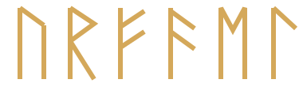
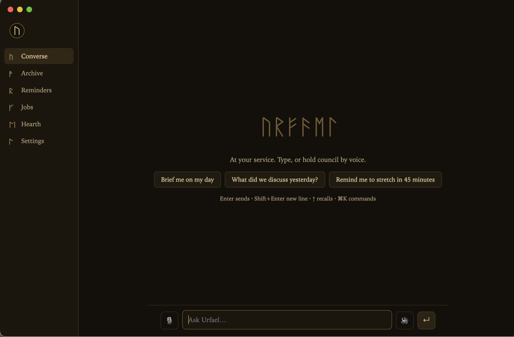

U R F A E L

The personal AI agent that doesn't get owned.
Voice-capable, runs on your own machine, on the flat-rate Claude subscription you already have. No inbound port to attack. No per-token meter. And it tells you plainly what it doesn't know.
macOS · Linux
no API key to start
inbound port: none
security benchmark: 7/7 attack classes
MIT
★ GitHub
The security benchmark
Install

The Console — chat with live tool activity, push-to-talk, archive, reminders, jobs, settings. Keyboard-first.